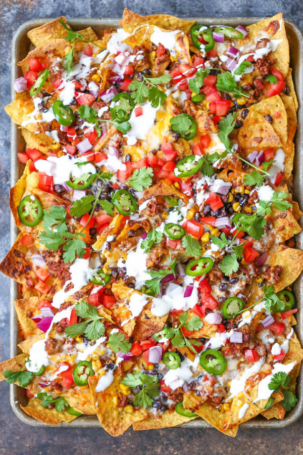

Nachos

Shawn's Famous Nachos
Shawn likes a simple yet robust version of nachos
that isn't overpowered by any ingredient. The ingredients
must always consist of fresh produce bought the same day.
It is imperative to have ripe avocados and tomatoes that are
not too soft.
You will only need a knife,spoon,skillet or pan, a cutting board and a lot
of tissues because things can sometimes get messy!
Ingredients
- 1 bunch cilantro
- 1 large tomatoe
- 1 bunch green onion
- 2 medium ripe avocado
- 1 lime
- 1 lb skirt steak
- 1 package mexican cheese
- 1 medium jalapeno
- 1 large bag tortilla chips
- salt
- pepper
- aluminum foil
- baking sheet
Steps
- Preheat oven to 400
- Wash and dry cilantro,jalapeno,green onions, tomatoe and lime
- Heat pan and, on a seperate cutting board, season steak generously with salt,pepper and oil
- Sear steak on pan on medium heat
- Dice tomatoe,onion,jalapeno,green onions, and avocados
- Spread tortilla chips on aluminum foil on the baking sheet
- Remove and let steak rest for 4 minutes
- Dice and place steak on tortilla chips
- Cover steak with cheese
- Put oven on broil and put in sheet pan for 2 1/2 minutes until cheese is melted
- Remove sheet pan and gracefully spread all chopped ingredients evenly all over
- Squeeze lime all over
- Enjoy nachos